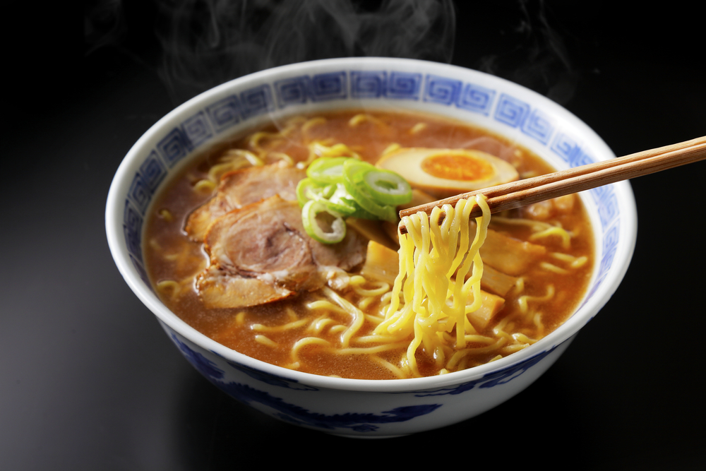
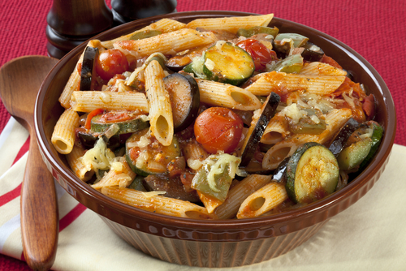

Favoritos

Ramen Tonkotsu
13/8/2018

Ingredientes
Guarnición:
- 200 gr. de panceta de cerdo
- 2 huevos
- Fideos soba
- Aceite de oliva
- Vinagre
Para el caldo
- 2 huesos de pollo
- 1 puerro
- 5 dientes de ajo
- 1 cucharadita de jengibre
- 1 cebolla
- 1 zanahoria
Para la salsa
- 500 cl. de salsa de soja
- 200 cl. de mirin
- 100 cl. de sake
- 10 cm de alga kombu
- 1 cucharadita de jengibre
- 1 diente de ajo
- 1⁄2 puerro
Preparación del Ramen Tonkotsu
- Calentar 1 litro de agua en una olla, cuando empiece a hervir añade los huesos de pollo, el ajo triturado, la cebolla cortada en cuartos, el jengibre, la zanahoria y el puerro picado en cuatro partes. Agrega un poco de sal y deja cocinar todo junto a fuego bajo durante 1 hora para tener un caldo consistente y lleno de sabor.
- Enrollar la panceta de cerdo con un poco de hilo de cocinar y sofreir hasta que la carne este dorada
- Transcurrida la hora de cocción del caldo, saca los huesos de pollo y metes la panceta que has frito. Deja cocinar todo junto por media hora. Pasado ese tiempo, aparta la olla del fuego, destápala y déjala enfriar
- En otra olla más pequeña vas a poner a fuego lento la salsa de soja, el mirin y el sake junto con una cucharada de jengibre, un diente de ajo picado y el puerro troceado. En el momento que veas que la salsa comienza a hervir, la apartas del fuego.
- En otra cacerola vas a hervir medio litro de agua con el vinagre y un poco de sal, cuando alcance el punto de ebullición echas los huevos para que se cuezan por 6 minutos.
- A continuación saca la carne de la olla del caldo y la pones a marinar junto con los huevos pelados en un recipiente con la salsa que has preparado antes. Deja marinar por 30 minutos, al terminar, deja la carne y el huevo reposar en la nevera unos minutos.
- Corta los huevos ahora por la mitad y la carne la troceas a tu gusto, para que te sea más fácil montar el plato.
- Hierves agua para cocinar los fideos soba, que no suelen tardar más de 10 minutos. Cuando estén listos los cuelas y escurres.
- Pon los fideos en un recipiente profundo junto con caldo al gusto, agrega 5 cucharadas soperas de la salsa que has preparado, la carne y los huevos y ya tienes tu plato de ramen listo para comer.
Receta de ratatouille con pasta
13/8/2018

Ingredientes
- 400 gr. de pasta
- 1⁄2 cebolla
- 1 berenjena
- 1 pimiento verde
- 1 pimiento rojo
- 100 gr. de calabaza
- 1 bote de salsa de tomate
- Orégano
- Albahaca
- Pimienta negra molida
- Sal
- Aceite
Preparación de ratatouille con pasta
- Lo primero de todo será poner agua a calentar hasta llevarla a ebullición. Agrega una cucharada de sal y echa la pasta para que se vaya haciendo durante un cuarto de hora más o menos. No obstante, fíjate en las indicaciones del fabricante para controlar bien el tiempo.
- Una vez la pasta esté lista, cuélala y escúrrela bien, reserva. Vamos a por las verduras.
- Pela la cebolla y pícala tan pequeña como puedas. Sofríela en una sartén con un poquito de aceite de oliva para que se dore.
- Corta a tiras los pimientos y a dados la calabaza y la berenjera echándolo todo a la sartén cuando veas que la cebolla se transparenta.
- Sofríe durante unos diez minutos hasta que veas que las verduras está bien hecha. Agrega ahora la pasta, la pimienta negra, el orégano y un poco de sal y recubre todo con el tomate frito. Sofríe durante unos cinco minutos.
- Cuando veas que ya está listo, enjuaga la albahaca y sirve el ratatouille con pasta en los platos. Decora con un poco de albahaca y, ¡voilá!